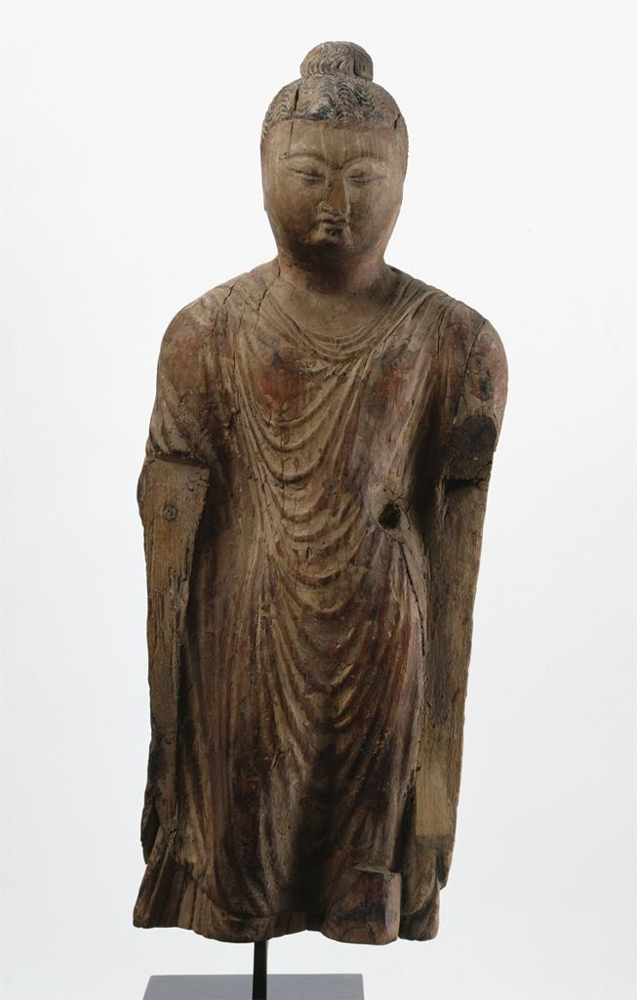

|  | Quick Facts
Found in a cave Some year |
|---|
This Buddha, titled “Standing Buddha” is severely damaged. Without half his arms and without his legs, a museum pole is needed to keep the sculpture up. Perhaps the reason of this deterioration is the choice of material. Instead of being made from and carved from stone, this Buddha is made from wood. Additionally, the description indicates that the wood was once painted, but most of the color is unavailable to be seen. Only some remnants of red are seen on the Buddha’s chest.
This Buddha is also relatively slender, and is wearing a slimmer robe that still drapes on his body. His hair is wrapped into a bun that ends on the back of his head. His face is on the fatter side, and is a bit disproportionately wide considering his otherwise slim appearance.